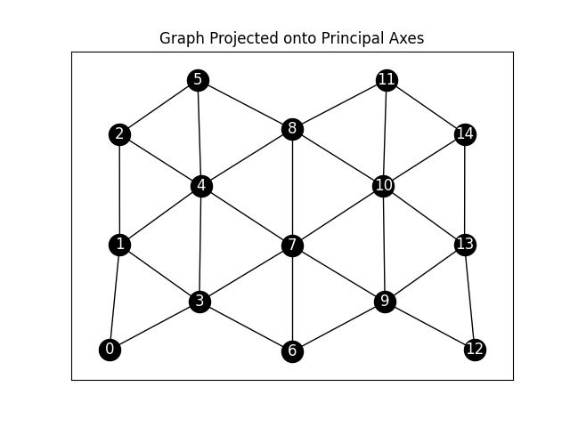

Large language models like ChatGPT are a great tool for software
developers to quickly get code snippets, information about fixes,
configuration requirements or how to use xyz package in general.
Everything that is stored as code, documented as text, or discussed on
forums like stackoverflow is now nicely available in dialogue form. But
how do you approach new ideas with AI? Just asking often fails and
becomes frustrating. You just get the usual fuzzy mainstream answer or
even a hallucination.
Much research has been done in 2023 to improve such reasoning,
planning and extrapolation skills in AI. The undeniable success of
improving reasoning by simply adding “just go step be step” gave the
right hint. Since then, many different methods of orchestrating
step-by-step convergence towards a final answer could unlock these
buried capabilities of LLMs, such as Prompt Breeder, Chain-of-Thought
(CoT), Zero-shot CoT, Program-of-Thoughts, AutoCoT, Automatic Prompt
Engineer, Zero-shot prompt, Plan-and-Solve etc.. Using this findings as
a developer opens the door to use ChatGPT as a co-programming agent for
jointly addressing new areas.
To illustrate how far you can get with this, I have put together this
dialogue. The task is: “Let’s make a graph spring layout function for
NetworkX for planar graphs, which is really planar”. Behind this is a
real motivation as the NetworkX built-in function is not very
impressive, and other standalone Python packages require C++ or Rust
code, to be build from scratch. So it would be nice to have a numpy
implementation for network from AI? But asking directly does not help.
It gives us a suggestion that barely works. Not any better than the
build in one.
Following the lessons learned from research means, that we need to
have a concept how to reach our goal, and we take one step at a time.
This avoids cognitve overload, of AI and human:
separate the maths and concepts from coding.
start with a just an implementation sketch,
implement one step at a time,
carefully analyse the answer we get
give concrete feedback what to do next, or where to correct
carefully blend in additional complexity
It seams to be important to stay in the driver’s seat. Only when the
base is solidified, we move on to the next level of complexity. The key
is to understand that the control and top-level guidance remains on the
human side.
As you can see below, this kind of co-programming allows you to
explore the problem, avoid hallucinations and ultimately get good
results. If your plan is flawed, you will run into dead ends. The AI may
even lead you astray. So you have to step back and think again. This is
actually a plus for me, as it gives a chance to learn about the options
that don’t work, even if they are following a likely path.
It took 22 lines of input and gave back 310 lines, about 1/3 text and
2/3 code. It’s a kind of magic that AI can be such a competent
companion, which opens up a new way of developing It feels very
rewarding and collaborative.
As a nice side effect, you get documentation of the thought process
that you would never have written down in the traditional way. It is a
huge gain in speed and ability to surface your train of thought.
Happy hacking!
Dialog
ME: Hey AI! I’d like to solve a programming problem
with you. Are you up for it?
AI: Of course! I’m here to help. Please go ahead and
tell me about the programming problem you’re facing.
I would like to draw a graph using a physical spring model. Let’s
define the force model first.
there is a spring force along the edge i,j
we assume every node has a positive charge, so its repulsive.
there should be a minor fixed negative charge to keep the nodes
centered.
Could you please write down the math first.
The problem definition
and mathematics
AI: Certainly! To model the graph with a physical
spring model, we’ll use a combination of forces:
Spring Force (Hooke’s Law): This force acts along
the edge between two nodes \(i\) and
\(j\). According to Hooke’s Law, the
force exerted by a spring is proportional to the displacement from its
rest length. If \(d_{ij}\) is the
distance between nodes \(i\) and \(j\), and \(L\) is the natural length of the spring (or
the desired separation between nodes), the spring force \(F_{spring}\) is given by:
\[ F_{spring} = k_s \cdot (d_{ij} - L)
\]
where \(k_s\) is the spring
constant.
Electrostatic Repulsive Force: Since each node has
a positive charge, they repel each other. The repulsive force between
any two nodes \(i\) and \(j\) can be modeled similar to Coulomb’s
law:
\[ F_{repulse} = \frac{k_r}{d_{ij}^2}
\]
where \(k_r\) is a constant of
proportionality for the repulsive force, and \(d_{ij}\) is the distance between nodes
\(i\) and \(j\).
[…]
(answers with 80 lines of text) It gives a description of the
forces and dynamics of the problem in the style above, including the
math of the forces.
How would you update the positions after a time step dt?
AI: (answers with 80 lines of text) It brings up
the right mathmatics to solve the dynamics.
Get a first sketch and
setup testing
Great, now we have the math. How to implement this with numpy for the
dynamics and using networkx for the graph?
AI: (answers with 25 lines of text (1/2) and
code (1/2)) Together with a good description how our algorithm is going
to look like, we get a firsts sketch of python code
Please add the forces according to the math.
AI: (answers with 27 lines of text(1/3) and code
(2/3)) We get a code we can try to execute. Again together with short
description. But how to test this?
I think networkx can create random planar graphs. Please use this to
create a test graph.
AI: (answers with 30 lines of text(1/3) and code
(2/3)) With this I send AI in the wrong direction: it halluzinated there
is a readom planar graph, but there is none.
(I need to install packages and execute the code.) I get:
AttributeError: module ‘networkx’ has no attribute
‘random_planar_graph’
We can execute it
AI: (answers with 10 lines of text(1/2) and code
(1/2)) It corrects itself, describes the alternatives and chooses
one
I get some result. But layout spreads only into one direction. (I
don’t know what’s going on. Code seams to be ok.) For debugging it
would be nice to step through the simulation. Can you change the code
for this
A first layout, not good. What’s going on
here?
AI: (answers with 27 lines of text(1/3) and code
(2/3)) It adds a mechnism to plot every step so I can follow the
dynamics.
We add damping
It is good at some steps, but it oscillates. I think we need to add
damping
AI: (answers with 29 lines of text(1/4) and code
(3/4)) It adds damping.
Somewhat better. But not
good.
That’s somewhat better, but the test graph is not fully connected.
Difficult to judge. Let’s try it with nx.triangular_lattice_graph to get
e full picture.
AI: (answers with 28 lines of text(1/5) and code
(4/5)) It moves to nx.triangular_lattice_graph.
For the triangular graph we get
stuck.
We go to 3D
Layout does not really get planar. It get’s stuck. I think we have to
go 3D and the project it back to 2D. What do you think?
AI: (answers with 28 lines of text(1/4) and code
(3/4)) Despite of my rather superficial description it graps the concept
and modifies the code accordingly
there is something wrong I don’t see any movement
AI: (answers with 28 lines of text(1/3) and code
(2/3)) It concludes that wrong parameters do freeze the dynamcis right
away. It proposes a new set of paramenters, describes why and changes
the cod accordingly
It works great. But sometime the projection is not good. Can we calc
the major orientation in space, and do a sort of orthogonal
projection?
Layout is good, but sometimes only
visible from the side
We improve the projection to
2D
AI: (answers with 20 lines of text(1/3) and code
(2/3)) It follows my recommendation and comes up with an algorithm and
package how to do this.
Wow, finally it works very good.

A 3D spring particle layout now looking
good
AI: You’re welcome! I’m glad to hear that the
solution worked well for you. If you have any more questions in the
future, whether they’re about programming, data visualization, or
anything else, feel free to ask. Happy coding!